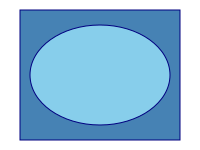
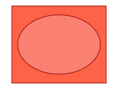

width=150% - fills the width, height from the viewBox ratio
height=50% - fills the width, reduced to fit the page, keeping the viewBox ratio
width=75%, height=100% - fills the width, height from the viewBox ratio

SVG width=50%, img width=400pt - 400×300